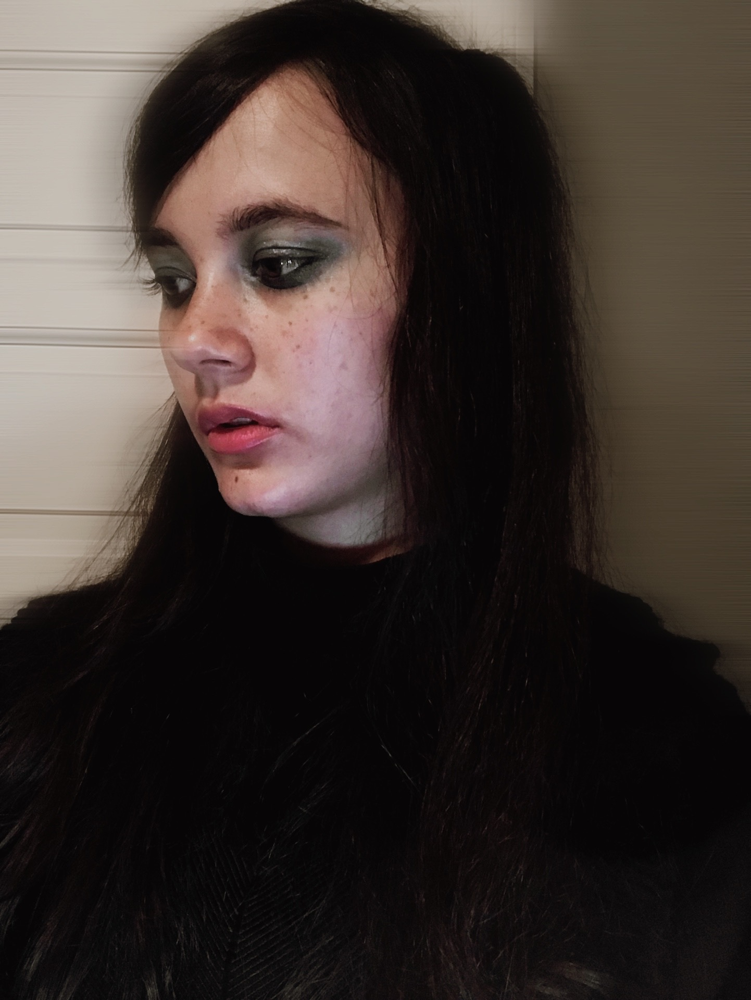
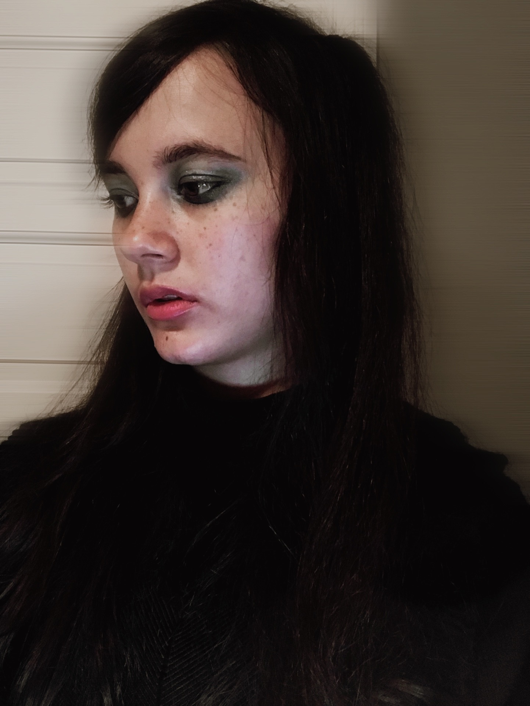

Hello World
Welcome to my old Hello World Page! I created this page as a part of my class assignment!
This is my first Re-L Mayer cosplay photo from the 2006 Ergo Proxy anime.
Please come take a look at my other page!
Go Back to HomepageWelcome to my old Hello World Page! I created this page as a part of my class assignment!
This is my first Re-L Mayer cosplay photo from the 2006 Ergo Proxy anime.
Please come take a look at my other page!
Go Back to Homepage